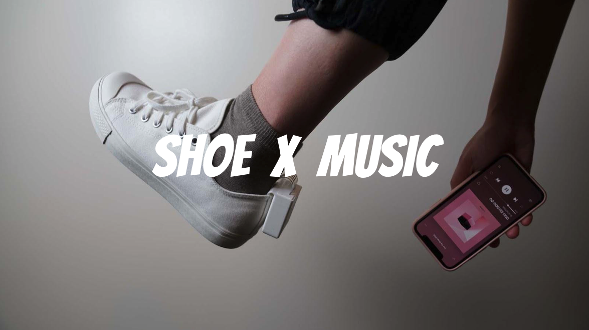
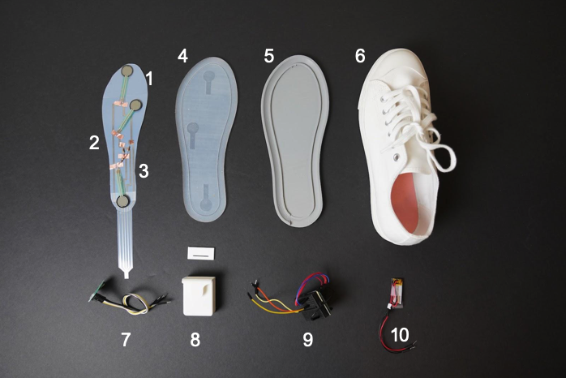

In the group project, you will take what you learned in class and brainstorm ideas how to use the knowledge to build new interactive applications.
You will start your group project by brainstorming different ideas and presenting them in class. You will then write a technical proposal that describes how you will build your idea while keeping in mind the budget and time you have available. You will then meet with the teaching team weekly and present the progress on your milestones. Finally, you will create presentation materials for your idea, i.e. draw a rotoscope, take photos, and make a video. You will then present all of your materials on the last day of classes in the final presentation and also give a live demo.


This grou project consists of the following parts: